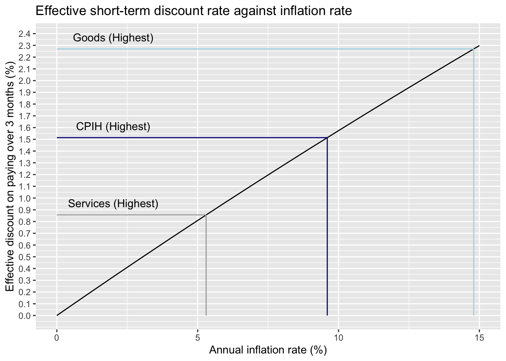
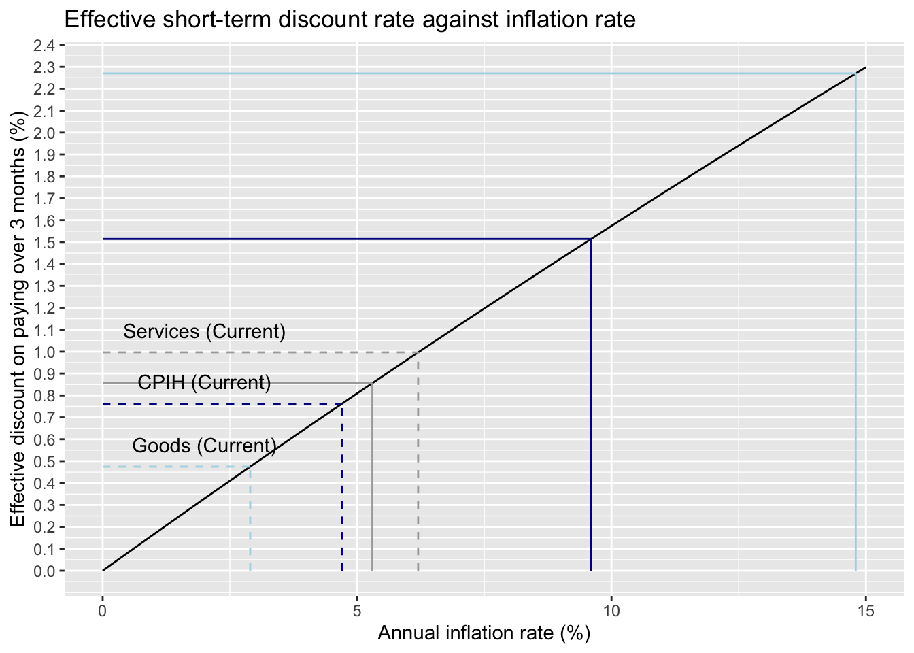

I have a Monzo account, and as part of the overall Monzo package make use of Monzo Flex, an interest-free credit service which means the payment made in one month is spread over broadly equal payments over the following three months.
However, I’ve always only bought something if I could afford to pay for it in full.
The reason for using Monzo Flex follows from an intuition: Deferring some of the payment for a good obtained in month \(t=0\) to months \(\{t=1, t=2, t=3\}\) should in effect offer some degree of saving on the cost of the good, as a pound in 1-3 months has a slightly lower value than a pound this month. This is because of inflation, and the higher the rate of inflation, the higher the effective interest-free credit discount should become.
However, I’ve never tried to work out what this effective savings rate is expected to be. Let’s try to work that out.
To do this, we need to consider the following:
The relationship between annual inflation rates and monthly inflation rates.
The concept of net present value (NPV).
Monthly and annual inflation rates
If prices go up 10% in 12 months, and go up the same % each month, how much do they go up each month?
An intuitive but wrong answer is that, as there are 12 months per year, the monthly inflation rate will be one twelfth of the annual inflation rate, which would imply a monthly inflation rate of \(0.1/12\) or around 0.83%. So,
\[
(1 + r_y) = 12 (1 + r_m)
\] Where \(r_y\) is the annual increase and \(r_m\) is the monthly increase.
However this assumption, as mentioned, is wrong, because it ignores the way that each month’s increase is applied to the product of all increases that occurred in previous months. For example, for three months with different inflation rates the total increase over the the three months will be
\[
(1 + r_{1,2,3}) = (1 + r_1)(1+r_2)(1+r_3)
\] If the monthly inflation rates for each of the three months are the same, \(r_m\), then this simplifies slightly to
\[
(1 + r_{1,2,3}) = (1 + r_m)^3
\]
By extension, as there are twelve months in a year, where the monthly inflation rate is fixed the equation becomes:
\[
(1 + r_y) = (1 + r_m)^{12}
\]
This, not \((1 + r_y) = 12 (1 + r_m)\), is the correct starting point. Solve for \(r_m\) …
\[
(1 + r_y)^{\frac{1}{12}} = 1 + r_m
\]
\[
r_m = {(1 + r_y)}^{\frac{1}{12}} - 1
\]
Plugging in a 10% annual inflation rate, i.e. 0.1 for \(r_y\), we therefore get an \(r_m\) value of around 0.007974, so around 0.8%.
Net Present Value
The idea of Net Present Value (NPV) is to translate costs and benefits that occur at different points in time onto a single timeframe, the present. This makes it easier to compare options that take place over different timeframes.
In the Flex example we are comparing two options:
Pay all now
Pay interest free over three consecutive monthly installments
Let’s say the cost of the good at month \(t\) is £150. Graphically, and with no interest and inflation, the two options look as follow:
In the no interest / no inflation scenario, the sums for option A and option B are equal, £150.
However, in scenarios with inflation, the value of money keeps decreasing. This means that a commitment to pay £50 month 3 is a commitment to pay less than in month 0. Using the 10% annual inflation rate example, we can estimate the cumulative devaluation by months 1, 2 and 3 by dividing the product of devaluations so far by the monthly inflation rate:
Continuing the example of a £150 item paid over months 1, 2 and 3, we can therefore convert to NPV by discounting each month’s costs by the index relative to month 0
The sum of npv_amount is now less than the £150 in option A, pay upfront. In this example, with 10% inflation, this sum is £147.64, which represents a 1.6% discount on option A.
Let’s now generalise to other inflation rates
Code
calc_npv_discount <-function(ry, total =150) { annual_to_monthly <-function(x) {(1+ x)^(1/12) -1} rm <-annual_to_monthly(ry) index0 <-1 index1 <- index0 / (1+ rm) index2 <- index1 / (1+ rm) index3 <- index2 / (1+ rm) npv_amt1 <- (total /3) * index1 npv_amt2 <- (total /3) * index2 npv_amt3 <- (total /3) * index31-sum(npv_amt1, npv_amt2, npv_amt3) / total}df <-tibble(annual_rate =seq(0, 0.15, by =0.01) ) |>mutate(effective_discount =map_dbl(annual_rate, calc_npv_discount) )gg <- df |>ggplot(aes(100* annual_rate, 100* effective_discount)) +geom_line() +labs(x ="Annual inflation rate (%)", y ="Effective discount on paying over 3 months (%)",title ="Effective short-term discount rate against inflation rate" ) +scale_y_continuous(breaks =seq(0, 15, by =0.1)) +annotate("segment", x =14.8, xend =14.8, colour ="lightblue", y =0, yend =100*calc_npv_discount(0.148)) +annotate("segment", x =0, xend =100*0.148, colour ="lightblue", y =100*calc_npv_discount(0.148), yend =100*calc_npv_discount(0.148)) +annotate("segment", x =9.6, xend =9.6, colour ="darkblue", y =0, yend =100*calc_npv_discount(0.096)) +annotate("segment", x =0, xend =100*0.096, colour ="darkblue", y =100*calc_npv_discount(0.096), yend =100*calc_npv_discount(0.096)) +annotate("segment", x =5.3, xend =5.3, colour ="darkgrey", y =0, yend =100*calc_npv_discount(0.053)) +annotate("segment", x =0, xend =100*0.053, colour ="darkgrey", y =100*calc_npv_discount(0.053), yend =100*calc_npv_discount(0.053)) gg +annotate("text", x =2, y =0.1+100*calc_npv_discount(0.148),label ="Goods (Highest)" ) +annotate("text", x =2, y =0.1+100*calc_npv_discount(0.096),label ="CPIH (Highest)" ) +annotate("text", x =2, y =0.1+100*calc_npv_discount(0.053),label ="Services (Highest)" )

In the above I’ve indicated the effective discount rates implied by different annual interest rates reported by the ONS in Figure 7 of this page These range from almost 2.3% for goods, to around 0.86% for services.
However, fortunately, the current inflation rates are somewhat lower, with the most recent reported inflation rates being 2.9% for goods, 6.2% for services, and 2.7% for CPIH.
Code
gg +annotate("segment", x =2.9, xend =2.9, colour ="lightblue", linetype ="dashed", y =0, yend =100*calc_npv_discount(0.029)) +annotate("segment", x =0, xend =100*0.029, colour ="lightblue", linetype ="dashed", y =100*calc_npv_discount(0.029), yend =100*calc_npv_discount(0.029)) +annotate("text", x =2, y =0.1+100*calc_npv_discount(0.029),label ="Goods (Current)" ) +annotate("segment", x =4.7, xend =4.7, colour ="darkblue", linetype ="dashed", y =0, yend =100*calc_npv_discount(0.047)) +annotate("segment", x =0, xend =100*0.047, colour ="darkblue", linetype ="dashed", y =100*calc_npv_discount(0.047), yend =100*calc_npv_discount(0.047)) +annotate("text", x =2, y =0.1+100*calc_npv_discount(0.047),label ="CPIH (Current)" ) +annotate("segment", x =6.2, xend =6.2, colour ="darkgrey", linetype ="dashed", y =0, yend =100*calc_npv_discount(0.062)) +annotate("segment", x =0, xend =100*0.062, colour ="darkgrey", linetype="dashed", y =100*calc_npv_discount(0.062), yend =100*calc_npv_discount(0.062)) +annotate("text", x =2, y =0.1+100*calc_npv_discount(0.062),label ="Services (Current)" )

So, the effective discount for deferring has fallen alongside inflation. However it’s still something.
Some thoughts
The immediate cost of deferring is by contrast the same. It involves clicking a couple of buttons, so a couple of seconds, in the same Monzo app.
There are some other consequences too: Using a higher proportion of one’s credit limit tends to lower one’s credit rating. This means the ability to acquire credit on more favourable terms can be adversely affected. Another issue is that, to avoid paying any effective interest rate on the credit, there always needs to be sufficient money in the current account to cover all upcoming payments. This requires either keeping more money in the current account than might be optimal from a savings perspective, or additional daily management of current account balances. As interest rates on savings are over 4% currently, having more money in the current account confers an opportunity cost in lost savings interest which might outweigh any benefits of using short-term interest free credit.
However, for now, as a general principle, realising marginal savings by pressing a couple of buttons doesn’t seem too bad, and at some points of time, and for some items, the savings have been around 2%.
I might return to looking at other scenarios, including how much might be lost by keeping more money in the current account, in later posts. For now I’ll leave things here, as I simply wanted to get some numbers behind the intuition that, in principle, paying later is better than paying now.